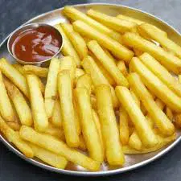

French Fries Recpie

How to Make French Fries ???
1. First, grab 1 extra-large potato, 2 large potatoes or 3 medium potatoes equalling about 315 grams. Rinse well in water and then peel the potato.
2. Now slice the potato in slices having 1 cm thickness. Before slicing, you can remove the top and bottom part of the potato to get a square or rectangle shaped potato.
3. Cut the potatoes in sticks having 1 cm width.
4.Cut the remaining potato slices in sticks as well.
5. Rinse these potato sticks for a couple of times in water. Add the rinsed potatoes to a bowl and submerge them in cold water for 30-45 minutes to remove extra starch.
6. After 30 minutes or 45 minutes, drain the potatoes in a colander.
7. Rinse the potatoes with running water. Drain all the extra water.
8. Then place them on a clean kitchen cotton napkin.
9. Fold the napkin over to press, pat and dry the potatoes. The potatoes have to be completely dried before you begin to fry them.
10. Heat oil in a wok or pan over medium or medium-low heat, depending on the heaviness of your pan.
11. Now, working in batches, add the potatoes to the oil. Do not overcrowd the wok (kadai) or pan. The oil will sizzle and bubble less when you fry the potatoes at this temperature.
12. Begin to fry them.
13. Stir in intervals while frying them for uniform cooking.
14. Fry/blanch in oil for about 3 minutes or until the potatoes are cooked, but not brown from outside.
15. Place the half fried potatoes on paper kitchen towels. Stack 3 to 4 paper towels. Press some paper towels from top also to absorb extra oil. Let the half fried potatoes cool down at room temperature.
16.after it is cooled down we can have it with tamato ketchup.